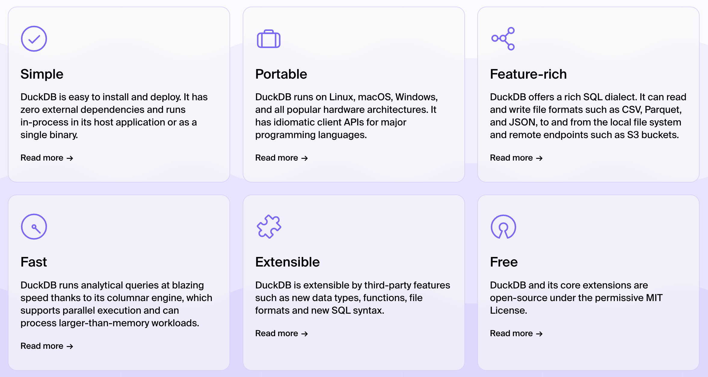
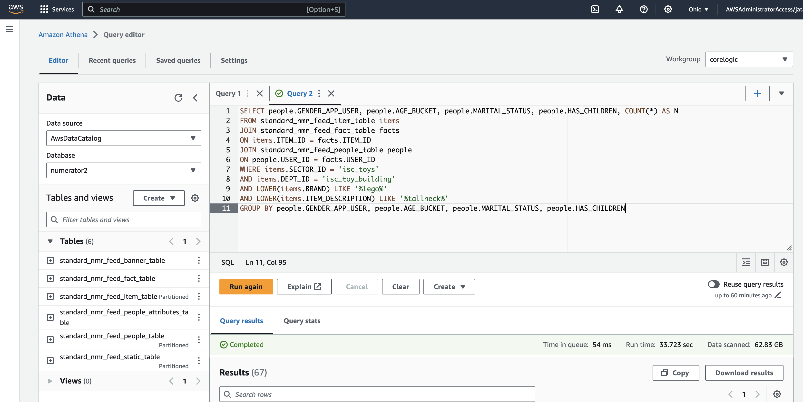

<!DOCTYPE html>


<html lang="en" data-content_root="./" >

  <head>
    <meta charset="utf-8" />
    <meta name="viewport" content="width=device-width, initial-scale=1.0" /><meta name="viewport" content="width=device-width, initial-scale=1" />

    <title>Creating a DuckDB database from a dataset &#8212; Kellogg Research Support Scaling Cookbook</title>
  
  
  
  <script data-cfasync="false">
    document.documentElement.dataset.mode = localStorage.getItem("mode") || "";
    document.documentElement.dataset.theme = localStorage.getItem("theme") || "";
  </script>
  
  <!-- Loaded before other Sphinx assets -->
  <link href="_static/styles/theme.css?digest=dfe6caa3a7d634c4db9b" rel="stylesheet" />
<link href="_static/styles/bootstrap.css?digest=dfe6caa3a7d634c4db9b" rel="stylesheet" />
<link href="_static/styles/pydata-sphinx-theme.css?digest=dfe6caa3a7d634c4db9b" rel="stylesheet" />

  
  <link href="_static/vendor/fontawesome/6.5.2/css/all.min.css?digest=dfe6caa3a7d634c4db9b" rel="stylesheet" />
  <link rel="preload" as="font" type="font/woff2" crossorigin href="_static/vendor/fontawesome/6.5.2/webfonts/fa-solid-900.woff2" />
<link rel="preload" as="font" type="font/woff2" crossorigin href="_static/vendor/fontawesome/6.5.2/webfonts/fa-brands-400.woff2" />
<link rel="preload" as="font" type="font/woff2" crossorigin href="_static/vendor/fontawesome/6.5.2/webfonts/fa-regular-400.woff2" />

    <link rel="stylesheet" type="text/css" href="_static/pygments.css?v=fa44fd50" />
    <link rel="stylesheet" type="text/css" href="_static/styles/sphinx-book-theme.css?v=a3416100" />
    <link rel="stylesheet" type="text/css" href="_static/togglebutton.css?v=13237357" />
    <link rel="stylesheet" type="text/css" href="_static/copybutton.css?v=76b2166b" />
    <link rel="stylesheet" type="text/css" href="_static/mystnb.4510f1fc1dee50b3e5859aac5469c37c29e427902b24a333a5f9fcb2f0b3ac41.css?v=be8a1c11" />
    <link rel="stylesheet" type="text/css" href="_static/sphinx-thebe.css?v=4fa983c6" />
    <link rel="stylesheet" type="text/css" href="_static/sphinx-design.min.css?v=87e54e7c" />
  
  <!-- Pre-loaded scripts that we'll load fully later -->
  <link rel="preload" as="script" href="_static/scripts/bootstrap.js?digest=dfe6caa3a7d634c4db9b" />
<link rel="preload" as="script" href="_static/scripts/pydata-sphinx-theme.js?digest=dfe6caa3a7d634c4db9b" />
  <script src="_static/vendor/fontawesome/6.5.2/js/all.min.js?digest=dfe6caa3a7d634c4db9b"></script>

    <script src="_static/documentation_options.js?v=9eb32ce0"></script>
    <script src="_static/doctools.js?v=9a2dae69"></script>
    <script src="_static/sphinx_highlight.js?v=dc90522c"></script>
    <script src="_static/clipboard.min.js?v=a7894cd8"></script>
    <script src="_static/copybutton.js?v=f281be69"></script>
    <script src="_static/scripts/sphinx-book-theme.js?v=887ef09a"></script>
    <script>let toggleHintShow = 'Click to show';</script>
    <script>let toggleHintHide = 'Click to hide';</script>
    <script>let toggleOpenOnPrint = 'true';</script>
    <script src="_static/togglebutton.js?v=4a39c7ea"></script>
    <script>var togglebuttonSelector = '.toggle, .admonition.dropdown';</script>
    <script src="_static/design-tabs.js?v=f930bc37"></script>
    <script>const THEBE_JS_URL = "https://unpkg.com/thebe@0.8.2/lib/index.js"; const thebe_selector = ".thebe,.cell"; const thebe_selector_input = "pre"; const thebe_selector_output = ".output, .cell_output"</script>
    <script async="async" src="_static/sphinx-thebe.js?v=c100c467"></script>
    <script>var togglebuttonSelector = '.toggle, .admonition.dropdown';</script>
    <script>const THEBE_JS_URL = "https://unpkg.com/thebe@0.8.2/lib/index.js"; const thebe_selector = ".thebe,.cell"; const thebe_selector_input = "pre"; const thebe_selector_output = ".output, .cell_output"</script>
    <script>DOCUMENTATION_OPTIONS.pagename = 'duckdb';</script>
    <link rel="index" title="Index" href="genindex.html" />
    <link rel="search" title="Search" href="search.html" />
    <link rel="next" title="KLC - Process Monitoring" href="klc-processes.html" />
    <link rel="prev" title="Scaling Example: Flat files" href="flat_file.html" />
  <meta name="viewport" content="width=device-width, initial-scale=1"/>
  <meta name="docsearch:language" content="en"/>
  </head>
  
  
  <body data-bs-spy="scroll" data-bs-target=".bd-toc-nav" data-offset="180" data-bs-root-margin="0px 0px -60%" data-default-mode="">

  
  
  <div id="pst-skip-link" class="skip-link d-print-none"><a href="#main-content">Skip to main content</a></div>
  
  <div id="pst-scroll-pixel-helper"></div>
  
  <button type="button" class="btn rounded-pill" id="pst-back-to-top">
    <i class="fa-solid fa-arrow-up"></i>Back to top</button>

  
  <input type="checkbox"
          class="sidebar-toggle"
          id="pst-primary-sidebar-checkbox"/>
  <label class="overlay overlay-primary" for="pst-primary-sidebar-checkbox"></label>
  
  <input type="checkbox"
          class="sidebar-toggle"
          id="pst-secondary-sidebar-checkbox"/>
  <label class="overlay overlay-secondary" for="pst-secondary-sidebar-checkbox"></label>
  
  <div class="search-button__wrapper">
    <div class="search-button__overlay"></div>
    <div class="search-button__search-container">
<form class="bd-search d-flex align-items-center"
      action="search.html"
      method="get">
  <i class="fa-solid fa-magnifying-glass"></i>
  <input type="search"
         class="form-control"
         name="q"
         id="search-input"
         placeholder="Search this book..."
         aria-label="Search this book..."
         autocomplete="off"
         autocorrect="off"
         autocapitalize="off"
         spellcheck="false"/>
  <span class="search-button__kbd-shortcut"><kbd class="kbd-shortcut__modifier">Ctrl</kbd>+<kbd>K</kbd></span>
</form></div>
  </div>

  <div class="pst-async-banner-revealer d-none">
  <aside id="bd-header-version-warning" class="d-none d-print-none" aria-label="Version warning"></aside>
</div>

  
    <header class="bd-header navbar navbar-expand-lg bd-navbar d-print-none">
    </header>
  

  <div class="bd-container">
    <div class="bd-container__inner bd-page-width">
      
      
      
      <div class="bd-sidebar-primary bd-sidebar">
        

  
  <div class="sidebar-header-items sidebar-primary__section">
    
    
    
    
  </div>
  
    <div class="sidebar-primary-items__start sidebar-primary__section">
        <div class="sidebar-primary-item">

  
    
  

<a class="navbar-brand logo" href="welcome.html">
  
  
  
  
  
    
    
      
    
    
    
    <script>document.write(``);</script>
  
  
</a></div>
        <div class="sidebar-primary-item">

 <script>
 document.write(`
   <button class="btn search-button-field search-button__button" title="Search" aria-label="Search" data-bs-placement="bottom" data-bs-toggle="tooltip">
    <i class="fa-solid fa-magnifying-glass"></i>
    <span class="search-button__default-text">Search</span>
    <span class="search-button__kbd-shortcut"><kbd class="kbd-shortcut__modifier">Ctrl</kbd>+<kbd class="kbd-shortcut__modifier">K</kbd></span>
   </button>
 `);
 </script></div>
        <div class="sidebar-primary-item"><nav class="bd-links bd-docs-nav" aria-label="Main">
    <div class="bd-toc-item navbar-nav active">
        
        <ul class="nav bd-sidenav bd-sidenav__home-link">
            <li class="toctree-l1">
                <a class="reference internal" href="welcome.html">
                    Welcome
                </a>
            </li>
        </ul>
        <ul class="current nav bd-sidenav">
<li class="toctree-l1"><a class="reference internal" href="introduction.html">Introduction</a></li>
<li class="toctree-l1"><a class="reference internal" href="kdc-datasets.html">Kellogg Data Cloud</a></li>
<li class="toctree-l1"><a class="reference internal" href="klc-datasets.html">Kellogg Linux Cluster</a></li>
<li class="toctree-l1"><a class="reference internal" href="flat_file.html">Scaling Example: Flat files</a></li>
<li class="toctree-l1 current active"><a class="current reference internal" href="#">Creating a DuckDB database from a dataset</a></li>
<li class="toctree-l1"><a class="reference internal" href="klc-processes.html">KLC - Process Monitoring</a></li>
<li class="toctree-l1"><a class="reference internal" href="klc-gpus.html">Scaling with GPUs</a></li>
<li class="toctree-l1"><a class="reference internal" href="takeaways.html">Final Thoughts</a></li>
</ul>

    </div>
</nav></div>
    </div>
  
  
  <div class="sidebar-primary-items__end sidebar-primary__section">
  </div>
  
  <div id="rtd-footer-container"></div>


      </div>
      
      <main id="main-content" class="bd-main" role="main">
        
        

<div class="sbt-scroll-pixel-helper"></div>

          <div class="bd-content">
            <div class="bd-article-container">
              
              <div class="bd-header-article d-print-none">
<div class="header-article-items header-article__inner">
  
    <div class="header-article-items__start">
      
        <div class="header-article-item"><button class="sidebar-toggle primary-toggle btn btn-sm" title="Toggle primary sidebar" data-bs-placement="bottom" data-bs-toggle="tooltip">
  <span class="fa-solid fa-bars"></span>
</button></div>
      
    </div>
  
  
    <div class="header-article-items__end">
      
        <div class="header-article-item">

<div class="article-header-buttons">


<div class="dropdown dropdown-source-buttons">
  <button class="btn dropdown-toggle" type="button" data-bs-toggle="dropdown" aria-expanded="false" aria-label="Source repositories">
    <i class="fab fa-github"></i>
  </button>
  <ul class="dropdown-menu">
      
      
      
      <li><a href="https://github.com/rs-kellogg/krs-scaling-cookbook" target="_blank"
   class="btn btn-sm btn-source-repository-button dropdown-item"
   title="Source repository"
   data-bs-placement="left" data-bs-toggle="tooltip"
>
  

<span class="btn__icon-container">
  <i class="fab fa-github"></i>
  </span>
<span class="btn__text-container">Repository</span>
</a>
</li>
      
      
      
      
      <li><a href="https://github.com/rs-kellogg/krs-scaling-cookbook/issues/new?title=Issue%20on%20page%20%2Fduckdb.html&body=Your%20issue%20content%20here." target="_blank"
   class="btn btn-sm btn-source-issues-button dropdown-item"
   title="Open an issue"
   data-bs-placement="left" data-bs-toggle="tooltip"
>
  

<span class="btn__icon-container">
  <i class="fas fa-lightbulb"></i>
  </span>
<span class="btn__text-container">Open issue</span>
</a>
</li>
      
  </ul>
</div>


<div class="dropdown dropdown-download-buttons">
  <button class="btn dropdown-toggle" type="button" data-bs-toggle="dropdown" aria-expanded="false" aria-label="Download this page">
    <i class="fas fa-download"></i>
  </button>
  <ul class="dropdown-menu">
      
      
      
      <li><a href="_sources/duckdb.md" target="_blank"
   class="btn btn-sm btn-download-source-button dropdown-item"
   title="Download source file"
   data-bs-placement="left" data-bs-toggle="tooltip"
>
  

<span class="btn__icon-container">
  <i class="fas fa-file"></i>
  </span>
<span class="btn__text-container">.md</span>
</a>
</li>
      
      
      
      
      <li>
<button onclick="window.print()"
  class="btn btn-sm btn-download-pdf-button dropdown-item"
  title="Print to PDF"
  data-bs-placement="left" data-bs-toggle="tooltip"
>
  

<span class="btn__icon-container">
  <i class="fas fa-file-pdf"></i>
  </span>
<span class="btn__text-container">.pdf</span>
</button>
</li>
      
  </ul>
</div>


<button onclick="toggleFullScreen()"
  class="btn btn-sm btn-fullscreen-button"
  title="Fullscreen mode"
  data-bs-placement="bottom" data-bs-toggle="tooltip"
>
  

<span class="btn__icon-container">
  <i class="fas fa-expand"></i>
  </span>

</button>


<script>
document.write(`
  <button class="btn btn-sm nav-link pst-navbar-icon theme-switch-button" title="light/dark" aria-label="light/dark" data-bs-placement="bottom" data-bs-toggle="tooltip">
    <i class="theme-switch fa-solid fa-sun fa-lg" data-mode="light"></i>
    <i class="theme-switch fa-solid fa-moon fa-lg" data-mode="dark"></i>
    <i class="theme-switch fa-solid fa-circle-half-stroke fa-lg" data-mode="auto"></i>
  </button>
`);
</script>


<script>
document.write(`
  <button class="btn btn-sm pst-navbar-icon search-button search-button__button" title="Search" aria-label="Search" data-bs-placement="bottom" data-bs-toggle="tooltip">
    <i class="fa-solid fa-magnifying-glass fa-lg"></i>
  </button>
`);
</script>
<button class="sidebar-toggle secondary-toggle btn btn-sm" title="Toggle secondary sidebar" data-bs-placement="bottom" data-bs-toggle="tooltip">
    <span class="fa-solid fa-list"></span>
</button>
</div></div>
      
    </div>
  
</div>
</div>
              
              

<div id="jb-print-docs-body" class="onlyprint">
    <h1>Creating a DuckDB database from a dataset</h1>
    <!-- Table of contents -->
    <div id="print-main-content">
        <div id="jb-print-toc">
            
            <div>
                <h2> Contents </h2>
            </div>
            <nav aria-label="Page">
                <ul class="visible nav section-nav flex-column">
<li class="toc-h2 nav-item toc-entry"><a class="reference internal nav-link" href="#what-is-parquet">What is parquet?</a></li>
<li class="toc-h2 nav-item toc-entry"><a class="reference internal nav-link" href="#understanding-the-file-system">Understanding the file system</a><ul class="nav section-nav flex-column">
<li class="toc-h3 nav-item toc-entry"><a class="reference internal nav-link" href="#using-the-partitions">Using the partitions</a></li>
</ul>
</li>
<li class="toc-h2 nav-item toc-entry"><a class="reference internal nav-link" href="#duckdb">DuckDB</a><ul class="nav section-nav flex-column">
<li class="toc-h3 nav-item toc-entry"><a class="reference internal nav-link" href="#duckdb-python-with-numerator">DuckDB/Python with Numerator</a></li>
<li class="toc-h3 nav-item toc-entry"><a class="reference internal nav-link" href="#query-partitioned-database-of-parquet-files">Query partitioned database of parquet files</a></li>
<li class="toc-h3 nav-item toc-entry"><a class="reference internal nav-link" href="#why-duckdb-if-athena-is-faster">Why DuckDB if Athena is faster?</a></li>
</ul>
</li>
</ul>
            </nav>
        </div>
    </div>
</div>

              
                
<div id="searchbox"></div>
                <article class="bd-article">
                  
  <section class="tex2jax_ignore mathjax_ignore" id="creating-a-duckdb-database-from-a-dataset">
<h1>Creating a DuckDB database from a dataset<a class="headerlink" href="#creating-a-duckdb-database-from-a-dataset" title="Link to this heading">#</a></h1>
<p>There are lots of options out there for creating SQL databases, but a very powerful and free option is to use <a class="reference external" href="https://duckdb.org/">DuckDB</a>. The advantage of DuckDB is that has an API for just about every programming language out there (Python, C, R, Java, etc.) so you can use it however you like. It also requires very little set up as you can query directly from a flat file like a CSV, or multiple files, or from a partitioned file system for better efficiency.</p>
<p>We’ll use the Numerator dataset that we have been using on AWS/Athena. This dataset is also available on KLC in the form of parquet files.</p>
<section id="what-is-parquet">
<h2>What is parquet?<a class="headerlink" href="#what-is-parquet" title="Link to this heading">#</a></h2>
<blockquote>
<div><p>Apache Parquet is an open source, column-oriented data file format designed for efficient data storage and retrieval. It provides efficient data compression and encoding schemes with enhanced performance to handle complex data in bulk. Apache Parquet is designed to be a common interchange format for both batch and interactive workloads.
– <a class="reference external" href="https://www.databricks.com/glossary/what-is-parquet">DataBricks</a></p>
</div></blockquote>
<p>Essentially, parquet files are tabular just like a CSV file, except they are also (1) compressed and (2) preserve the data types of each column, which makes them easy to load into a database and maintain integrity.</p>
</section>
<section id="understanding-the-file-system">
<h2>Understanding the file system<a class="headerlink" href="#understanding-the-file-system" title="Link to this heading">#</a></h2>
<p>The Numerator dataset on KLC lives here:</p>
<p><code class="docutils literal notranslate"><span class="pre">/kellogg/data/numerator/data/parquet-part</span></code></p>
<div class="highlight-python notranslate"><div class="highlight"><pre><span></span><span class="n">ls</span> <span class="o">-</span><span class="n">l</span> <span class="o">/</span><span class="n">kellogg</span><span class="o">/</span><span class="n">data</span><span class="o">/</span><span class="n">numerator</span><span class="o">/</span><span class="n">data</span><span class="o">/</span><span class="n">parquet</span><span class="o">-</span><span class="n">part</span>
</pre></div>
</div>
<div class="highlight-none notranslate"><div class="highlight"><pre><span></span>total 98
drwxrwx--x+  2 wkt406 wkt406  4096 Jun 19 12:01 standard_nmr_feed_banner_table/
drwxrwx--x+  2 wkt406 wkt406 65536 Jun 20 15:53 standard_nmr_feed_fact_table/
drwxrwx--x+ 25 wkt406 wkt406  4096 Jun 30 12:36 standard_nmr_feed_item_table/
drwxrwx--x+  2 wkt406 wkt406 16384 Jun 19 12:12 standard_nmr_feed_people_attributes_table/
drwxrwx--x+ 13 wkt406 wkt406  4096 Jun 19 12:01 standard_nmr_feed_people_table/
drwxrwx--x+ 77 wkt406 wkt406 16384 Jun 19 12:12 standard_nmr_feed_static_table/
</pre></div>
</div>
<p>Each subdirectory contains all the data from a single table, saved as multiple parquet files.</p>
<section id="using-the-partitions">
<h3>Using the partitions<a class="headerlink" href="#using-the-partitions" title="Link to this heading">#</a></h3>
<p>You can tell which tables are partitioned based on the naming of subdirectories. In this case, the item table directory is sub-divided into directories that contain parquet files of only a single SECTOR_ID.</p>
<div class="highlight-python notranslate"><div class="highlight"><pre><span></span><span class="n">ls</span> <span class="o">-</span><span class="n">l</span> <span class="o">/</span><span class="n">kellogg</span><span class="o">/</span><span class="n">data</span><span class="o">/</span><span class="n">numerator</span><span class="o">/</span><span class="n">data</span><span class="o">/</span><span class="n">parquet</span><span class="o">-</span><span class="n">part</span><span class="o">/</span><span class="n">standard_nmr_feed_item_table</span>
</pre></div>
</div>
<div class="highlight-none notranslate"><div class="highlight"><pre><span></span>total 353
drwxrwx--x+ 2 wkt406 wkt406  4096 Jun 30 12:58 SECTOR_ID=/
drwxrwx--x+ 2 wkt406 wkt406 16384 Jun 30 12:58 SECTOR_ID=isc_apparel/
drwxrwx--x+ 2 wkt406 wkt406 16384 Jun 30 12:58 SECTOR_ID=isc_automotive/
drwxrwx--x+ 2 wkt406 wkt406 16384 Jun 30 12:58 SECTOR_ID=isc_baby/
drwxrwx--x+ 2 wkt406 wkt406 16384 Jun 30 12:58 SECTOR_ID=isc_books/
drwxrwx--x+ 2 wkt406 wkt406 16384 Jun 30 12:58 SECTOR_ID=isc_electronics/
drwxrwx--x+ 2 wkt406 wkt406 16384 Jun 30 12:58 SECTOR_ID=isc_entertainment/
drwxrwx--x+ 2 wkt406 wkt406 16384 Jun 30 12:58 SECTOR_ID=isc_grocery/
drwxrwx--x+ 2 wkt406 wkt406 16384 Jun 30 12:58 SECTOR_ID=isc_gro_household/
drwxrwx--x+ 2 wkt406 wkt406 16384 Jun 30 12:58 SECTOR_ID=isc_gro_tobacco_products_and_accessories/
drwxrwx--x+ 2 wkt406 wkt406 16384 Jun 30 12:58 SECTOR_ID=isc_health_and_beauty/
drwxrwx--x+ 2 wkt406 wkt406 16384 Jun 30 12:58 SECTOR_ID=isc_home_and_garden/
drwxrwx--x+ 2 wkt406 wkt406 16384 Jun 30 12:58 SECTOR_ID=isc_indeterminate_category/
drwxrwx--x+ 2 wkt406 wkt406 16384 Jun 30 12:58 SECTOR_ID=isc_non_item/
drwxrwx--x+ 2 wkt406 wkt406 16384 Jun 30 12:58 SECTOR_ID=isc_office/
drwxrwx--x+ 2 wkt406 wkt406 16384 Jun 30 12:58 SECTOR_ID=isc_party_and_occasions/
drwxrwx--x+ 2 wkt406 wkt406 16384 Jun 30 12:58 SECTOR_ID=isc_pet/
drwxrwx--x+ 2 wkt406 wkt406 16384 Jun 30 12:58 SECTOR_ID=isc_qsr/
drwxrwx--x+ 2 wkt406 wkt406 16384 Jun 30 12:58 SECTOR_ID=isc_restaurant/
drwxrwx--x+ 2 wkt406 wkt406 16384 Jun 30 12:58 SECTOR_ID=isc_sports/
drwxrwx--x+ 2 wkt406 wkt406 16384 Jun 30 12:58 SECTOR_ID=isc_tools_and_home_improvement/
drwxrwx--x+ 2 wkt406 wkt406 16384 Jun 30 12:58 SECTOR_ID=isc_toys/
drwxrwx--x+ 2 wkt406 wkt406 16384 Jun 30 12:58 SECTOR_ID=na/
</pre></div>
</div>
</section>
</section>
<section id="duckdb">
<h2>DuckDB<a class="headerlink" href="#duckdb" title="Link to this heading">#</a></h2>
<p></p>
<p>The main advantage of DuckDB over AWS/Athena is that it is free! You can also use it to build your own databases. It can work on any several different types of files (i.e., CSV, JSON, parquet, compressed/uncompressed, etc.).</p>
<p>Note: all the data used to build Kellogg AWS/Athena databases are available on KLC as parquet files.</p>
<section id="duckdb-python-with-numerator">
<h3>DuckDB/Python with Numerator<a class="headerlink" href="#duckdb-python-with-numerator" title="Link to this heading">#</a></h3>
<p>Duck DB can be used with Pandas to generate output in dataframes using the .fetchdf() method. You can specify the number of threads used in the query with the SET command.</p>
<div class="highlight-python notranslate"><div class="highlight"><pre><span></span><span class="kn">import</span> <span class="nn">duckdb</span>
<span class="kn">import</span> <span class="nn">pandas</span> <span class="k">as</span> <span class="nn">pd</span>
<span class="n">pd</span><span class="o">.</span><span class="n">set_option</span><span class="p">(</span><span class="s1">&#39;display.max_columns&#39;</span><span class="p">,</span> <span class="kc">None</span><span class="p">)</span>
</pre></div>
</div>
<div class="highlight-python notranslate"><div class="highlight"><pre><span></span><span class="n">query</span> <span class="o">=</span> <span class="s1">&#39;&#39;&#39; </span>
<span class="s1">SET threads to 16;</span>
<span class="s1">SELECT SECTOR_ID, COUNT(*) AS N</span>
<span class="s1">FROM read_parquet(&#39;/kellogg/data/numerator/data/parquet-part/standard_nmr_feed_item_table/*/*.parquet&#39;,</span>
<span class="s1">                    hive_partitioning=true)</span>
<span class="s1">GROUP BY SECTOR_ID;</span>
<span class="s1">&#39;&#39;&#39;</span>
<span class="n">df</span> <span class="o">=</span> <span class="n">duckdb</span><span class="o">.</span><span class="n">query</span><span class="p">(</span><span class="n">query</span><span class="p">)</span><span class="o">.</span><span class="n">fetchdf</span><span class="p">()</span>
</pre></div>
</div>
<div class="highlight-python notranslate"><div class="highlight"><pre><span></span><span class="n">df</span>
</pre></div>
</div>
<div>
<style scoped>
    .dataframe tbody tr th:only-of-type {
        vertical-align: middle;
    }
<div class="highlight-none notranslate"><div class="highlight"><pre><span></span>.dataframe tbody tr th {
    vertical-align: top;
}

.dataframe thead th {
    text-align: right;
}
</pre></div>
</div>
</style>
<table border="1" class="dataframe">
  <thead>
    <tr style="text-align: right;">
      <th></th>
      <th>SECTOR_ID</th>
      <th>N</th>
    </tr>
  </thead>
  <tbody>
    <tr>
      <th>0</th>
      <td>isc_qsr</td>
      <td>3730900</td>
    </tr>
    <tr>
      <th>1</th>
      <td>isc_toys</td>
      <td>2986349</td>
    </tr>
    <tr>
      <th>2</th>
      <td>isc_indeterminate_category</td>
      <td>548714</td>
    </tr>
    <tr>
      <th>3</th>
      <td>isc_sports</td>
      <td>1067313</td>
    </tr>
    <tr>
      <th>4</th>
      <td>isc_tools_and_home_improvement</td>
      <td>2717426</td>
    </tr>
    <tr>
      <th>5</th>
      <td>na</td>
      <td>104810505</td>
    </tr>
    <tr>
      <th>6</th>
      <td>isc_non_item</td>
      <td>3120410</td>
    </tr>
    <tr>
      <th>7</th>
      <td>isc_office</td>
      <td>1559704</td>
    </tr>
    <tr>
      <th>8</th>
      <td>isc_apparel</td>
      <td>10987294</td>
    </tr>
    <tr>
      <th>9</th>
      <td>isc_automotive</td>
      <td>1270808</td>
    </tr>
    <tr>
      <th>10</th>
      <td>isc_baby</td>
      <td>2110536</td>
    </tr>
    <tr>
      <th>11</th>
      <td>isc_gro_household</td>
      <td>4783645</td>
    </tr>
    <tr>
      <th>12</th>
      <td>isc_grocery</td>
      <td>64920244</td>
    </tr>
    <tr>
      <th>13</th>
      <td>isc_books</td>
      <td>1067287</td>
    </tr>
    <tr>
      <th>14</th>
      <td>isc_electronics</td>
      <td>4094064</td>
    </tr>
    <tr>
      <th>15</th>
      <td>isc_entertainment</td>
      <td>251103</td>
    </tr>
    <tr>
      <th>16</th>
      <td>isc_health_and_beauty</td>
      <td>11536175</td>
    </tr>
    <tr>
      <th>17</th>
      <td>isc_party_and_occasions</td>
      <td>1841985</td>
    </tr>
    <tr>
      <th>18</th>
      <td>isc_pet</td>
      <td>3460306</td>
    </tr>
    <tr>
      <th>19</th>
      <td>isc_restaurant</td>
      <td>262553</td>
    </tr>
    <tr>
      <th>20</th>
      <td></td>
      <td>3</td>
    </tr>
    <tr>
      <th>21</th>
      <td>isc_home_and_garden</td>
      <td>8383213</td>
    </tr>
    <tr>
      <th>22</th>
      <td>isc_gro_tobacco_products_and_accessories</td>
      <td>1438334</td>
    </tr>
  </tbody>
</table>
</div>
</section>
<section id="query-partitioned-database-of-parquet-files">
<h3>Query partitioned database of parquet files<a class="headerlink" href="#query-partitioned-database-of-parquet-files" title="Link to this heading">#</a></h3>
<p>Use the glob string to designate the path to all parquet files in a table. Set the parameter hive_partition = true so that the function recognizes that the file system is set up for partitioning.</p>
<p>The following query uses three tables in the numerator dataset to look up some demographics of consumers who purchased the Lego Horizon Forbidden West Tallneck set.</p>
<p>Let’s break down this query:</p>
<ul class="simple">
<li><p>The items table (standard_nmr_feed_item_table) has a listing of all products purchased by consumers. It is partitioned by SECTOR_ID, so we make sure to include that field in the filter to only select toys. We also included the DEPT_ID to filter on “building” toys, the brand “Lego”, and the keyword “tallneck” in the name of the set included in the description.</p></li>
<li><p>We join with the facts table (standard_nmr_feed_fact_table), which links each purchase of an item (ITEM_ID) with a consumer that purchased it (USER_ID).</p></li>
<li><p>We join a third table people (standard_nmr_feed_people_table) to the facts table on USER_ID to get the demographics of each individual consumer. Note, this people table is also partitioned by census regions; however, even though we aren’t interested in the partitions, we still have to indicate that the file system is partitioned.</p></li>
<li><p>We select only the demographic fields we are interested in: gender, age, marital status, and whether or not they have children.</p></li>
<li><p>We can compress the output by asking for counts of each consumer breakout in an aggregate function (COUNT, GROUP BY) rather than listing every person.</p></li>
</ul>
<div class="highlight-python notranslate"><div class="highlight"><pre><span></span><span class="n">query</span> <span class="o">=</span> <span class="s1">&#39;&#39;&#39; </span>
<span class="s1">SELECT people.GENDER_APP_USER, people.AGE_BUCKET, people.MARITAL_STATUS, people.HAS_CHILDREN, COUNT(*) AS N</span>
<span class="s1">FROM read_parquet(&#39;/kellogg/data/numerator/data/parquet-part/standard_nmr_feed_item_table/*/*.parquet&#39;,</span>
<span class="s1">                hive_partitioning=true) items</span>
<span class="s1">JOIN read_parquet(&#39;/kellogg/data/numerator/data/parquet-part/standard_nmr_feed_fact_table/*.parquet&#39;) facts</span>
<span class="s1">ON items.ITEM_ID = facts.ITEM_ID</span>
<span class="s1">JOIN read_parquet(&#39;/kellogg/data/numerator/data/parquet-part/standard_nmr_feed_people_table/*/*/*.parquet&#39;,</span>
<span class="s1">                hive_partitioning=true) people</span>
<span class="s1">ON people.USER_ID = facts.USER_ID</span>
<span class="s1">WHERE items.SECTOR_ID = &#39;isc_toys&#39; </span>
<span class="s1">AND items.DEPT_ID = &#39;isc_toy_building&#39;</span>
<span class="s1">AND items.BRAND ILIKE &#39;</span><span class="si">%le</span><span class="s1">go%&#39;</span>
<span class="s1">AND items.ITEM_DESCRIPTION ILIKE &#39;%tallneck%&#39;</span>
<span class="s1">GROUP BY people.GENDER_APP_USER, people.AGE_BUCKET, people.MARITAL_STATUS, people.HAS_CHILDREN</span>
<span class="s1">&#39;&#39;&#39;</span>
<span class="n">df</span> <span class="o">=</span> <span class="n">duckdb</span><span class="o">.</span><span class="n">sql</span><span class="p">(</span><span class="n">query</span><span class="p">)</span><span class="o">.</span><span class="n">fetchdf</span><span class="p">()</span>
</pre></div>
</div>
<div class="highlight-python notranslate"><div class="highlight"><pre><span></span><span class="n">df</span>
</pre></div>
</div>
<div>
<style scoped>
    .dataframe tbody tr th:only-of-type {
        vertical-align: middle;
    }
<div class="highlight-none notranslate"><div class="highlight"><pre><span></span>.dataframe tbody tr th {
    vertical-align: top;
}

.dataframe thead th {
    text-align: right;
}
</pre></div>
</div>
</style>
<table border="1" class="dataframe">
  <thead>
    <tr style="text-align: right;">
      <th></th>
      <th>GENDER_APP_USER</th>
      <th>AGE_BUCKET</th>
      <th>MARITAL_STATUS</th>
      <th>HAS_CHILDREN</th>
      <th>N</th>
    </tr>
  </thead>
  <tbody>
    <tr>
      <th>0</th>
      <td>Male</td>
      <td>55-64</td>
      <td>Married</td>
      <td>No</td>
      <td>3</td>
    </tr>
    <tr>
      <th>1</th>
      <td>Male</td>
      <td>35-44</td>
      <td>Living with partner</td>
      <td>No</td>
      <td>5</td>
    </tr>
    <tr>
      <th>2</th>
      <td>Female</td>
      <td>45-54</td>
      <td>Divorced</td>
      <td>Yes</td>
      <td>6</td>
    </tr>
    <tr>
      <th>3</th>
      <td>Male</td>
      <td>35-44</td>
      <td>Married</td>
      <td>No</td>
      <td>6</td>
    </tr>
    <tr>
      <th>4</th>
      <td>Male</td>
      <td>18-20</td>
      <td>Never married</td>
      <td>Yes</td>
      <td>1</td>
    </tr>
    <tr>
      <th>...</th>
      <td>...</td>
      <td>...</td>
      <td>...</td>
      <td>...</td>
      <td>...</td>
    </tr>
    <tr>
      <th>62</th>
      <td>Female</td>
      <td>25-34</td>
      <td>Never married</td>
      <td>No</td>
      <td>8</td>
    </tr>
    <tr>
      <th>63</th>
      <td>Female</td>
      <td>35-44</td>
      <td>Living with partner</td>
      <td>No</td>
      <td>5</td>
    </tr>
    <tr>
      <th>64</th>
      <td>Female</td>
      <td>25-34</td>
      <td>Divorced</td>
      <td>Yes</td>
      <td>1</td>
    </tr>
    <tr>
      <th>65</th>
      <td>Female</td>
      <td>21-24</td>
      <td>Married</td>
      <td>Yes</td>
      <td>1</td>
    </tr>
    <tr>
      <th>66</th>
      <td>Male</td>
      <td>45-54</td>
      <td>Divorced</td>
      <td>No</td>
      <td>5</td>
    </tr>
  </tbody>
</table>
<p>67 rows × 5 columns</p>
</div>
<p>This query takes about 10 minutes to run on KLC using the maximum number of threads. We can run the same query on Athena and get the same results in about 30 seconds.</p>
<p></p>
</section>
<section id="why-duckdb-if-athena-is-faster">
<h3>Why DuckDB if Athena is faster?<a class="headerlink" href="#why-duckdb-if-athena-is-faster" title="Link to this heading">#</a></h3>
<p>Duck DB is completely free! If you have a very heavy workload, you can utilize DuckDB to run queryies on KLC to and easily integrate the results into your R or Python code. It also serves as a good playground for testing queries before using Athena.</p>
<p>As shown, you can also use DuckDB to query any organized file system that may not be available on Athena (CSV, JSON, etc.), so you could create your own databases for any data specific to your research.</p>
</section>
</section>
</section>

    <script type="text/x-thebe-config">
    {
        requestKernel: true,
        binderOptions: {
            repo: "binder-examples/jupyter-stacks-datascience",
            ref: "master",
        },
        codeMirrorConfig: {
            theme: "abcdef",
            mode: "python"
        },
        kernelOptions: {
            name: "python3",
            path: "./."
        },
        predefinedOutput: true
    }
    </script>
    <script>kernelName = 'python3'</script>

                </article>
              

              
              
              
              
                <footer class="prev-next-footer d-print-none">
                  
<div class="prev-next-area">
    <a class="left-prev"
       href="flat_file.html"
       title="previous page">
      <i class="fa-solid fa-angle-left"></i>
      <div class="prev-next-info">
        <p class="prev-next-subtitle">previous</p>
        <p class="prev-next-title">Scaling Example: Flat files</p>
      </div>
    </a>
    <a class="right-next"
       href="klc-processes.html"
       title="next page">
      <div class="prev-next-info">
        <p class="prev-next-subtitle">next</p>
        <p class="prev-next-title">KLC - Process Monitoring</p>
      </div>
      <i class="fa-solid fa-angle-right"></i>
    </a>
</div>
                </footer>
              
            </div>
            
            
              
                <div class="bd-sidebar-secondary bd-toc"><div class="sidebar-secondary-items sidebar-secondary__inner">


  <div class="sidebar-secondary-item">
  <div class="page-toc tocsection onthispage">
    <i class="fa-solid fa-list"></i> Contents
  </div>
  <nav class="bd-toc-nav page-toc">
    <ul class="visible nav section-nav flex-column">
<li class="toc-h2 nav-item toc-entry"><a class="reference internal nav-link" href="#what-is-parquet">What is parquet?</a></li>
<li class="toc-h2 nav-item toc-entry"><a class="reference internal nav-link" href="#understanding-the-file-system">Understanding the file system</a><ul class="nav section-nav flex-column">
<li class="toc-h3 nav-item toc-entry"><a class="reference internal nav-link" href="#using-the-partitions">Using the partitions</a></li>
</ul>
</li>
<li class="toc-h2 nav-item toc-entry"><a class="reference internal nav-link" href="#duckdb">DuckDB</a><ul class="nav section-nav flex-column">
<li class="toc-h3 nav-item toc-entry"><a class="reference internal nav-link" href="#duckdb-python-with-numerator">DuckDB/Python with Numerator</a></li>
<li class="toc-h3 nav-item toc-entry"><a class="reference internal nav-link" href="#query-partitioned-database-of-parquet-files">Query partitioned database of parquet files</a></li>
<li class="toc-h3 nav-item toc-entry"><a class="reference internal nav-link" href="#why-duckdb-if-athena-is-faster">Why DuckDB if Athena is faster?</a></li>
</ul>
</li>
</ul>
  </nav></div>

</div></div>
              
            
          </div>
          <footer class="bd-footer-content">
            
<div class="bd-footer-content__inner container">
  
  <div class="footer-item">
    
<p class="component-author">
By Kellogg Research Support
</p>

  </div>
  
  <div class="footer-item">
    

  <p class="copyright">
    
      © Copyright 2023.
      <br/>
    
  </p>

  </div>
  
  <div class="footer-item">
    
  </div>
  
  <div class="footer-item">
    
  </div>
  
</div>
          </footer>
        

      </main>
    </div>
  </div>
  
  <!-- Scripts loaded after <body> so the DOM is not blocked -->
  <script src="_static/scripts/bootstrap.js?digest=dfe6caa3a7d634c4db9b"></script>
<script src="_static/scripts/pydata-sphinx-theme.js?digest=dfe6caa3a7d634c4db9b"></script>

  <footer class="bd-footer">
  </footer>
  </body>
</html>